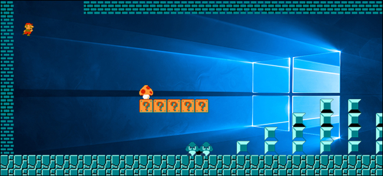
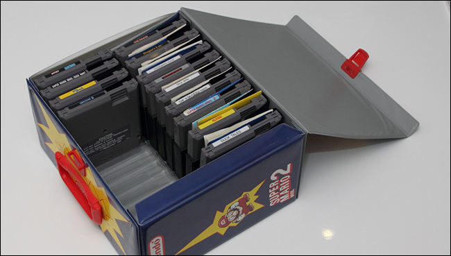

How-To Geek
How to Play Your Favorite NES, SNES, and Other Retro Games on Your PC with an Emulator

You’ve seen it. Maybe it was on an airplane, maybe it was at a friend’s house, but you saw people playing old Nintendo, Sega, or even PlayStation games on their computers. And yet, when you searched for those particular games in Steam, nothing comes up. What is this witchcraft?
What you saw, my friend, is called emulation. It’s by no means new, but you shouldn’t feel bad for not knowing about it. This isn’t exactly mainstream cultural knowledge, and can be a little confusing for beginners. Here’s how emulation works, and how to set it up on your Windows PC.
What Are Emulators and ROMs?
To play old school console games on your computer, you need two things: an emulator and a ROM.
- An emulator is a piece of software that mimics the hardware of an old-school console, giving your computer a way to open and run these classic games.
- A ROM is a ripped copy of the actual game cartridge or disc of yesterday.
So an emulator is a program you run, the ROM is the file you open with it. When you do, your computer will run that old school game.
Where do emulators come from? Generally, they’re built by fans. Sometimes it’s a single obsessive fan of a given console, and sometimes it’s an entire open source community. In almost all cases, though, these emulators are distributed for free online. Developers work hard to make their emulators as accurate as possible, meaning the experience of playing the game feels as much like playing on the original system as possible. There are several emulators out there for every retro gaming system you can imagine.

And where do ROMs come from? If a game comes on a DVD, like the PlayStation 2 or the Nintendo Wii, you can actually rip games yourself using a standard DVD drive to create ISO files. For old cartidge-based consoles, special pieces of hardware hardware makes it possible to copy games over to your computer. In theory, you could fill a collection this way. Basically no one does this, however, and instead downloads ROMs from a wide collection of websites that, for legal reasons, we will not be linking to. You’ll have to figure out how to get ROMs yourself.
Is downloading ROMs legal? We talked to a lawyer about this, actually. Broadly speaking, downloading a ROM for a game you do not own is not legal–just like downloading a pirated movie is not legal. Downloading a ROM for a game you do own, however, is hypothetically defensible–at least legally speaking. But there really isn’t caselaw here. What is clear is that it’s illegal for websites to be offering ROMs for the public to download, which is why such sites are frequently shut down.
The Best Starter Emulators for Windows Users
Now that you understand what emulation is, it’s time to get started setting up a console! But what software to use?
The absolute best emulator setup, in our humble opinion, is a program called RetroArch. RetroArch combines emulators for every retro system you can imagine, and gives you a beautiful leanback GUI for browsing your games.

The downside: it can be a little complicated to set up, especially for beginners. Don’t panic, though, because we have a complete guide to setting up RetroArch and an outline of RetroArch’s best advanced features. Follow those tutorials and you’ll have the best possible emulation setup in no time. (You might also check out this forum thread, which has great recommended settings for NES and SNES in RetroArch.)
![]()
Having said that, RetroArch might be overkill for you, particularly if you only care about one system or game. If you want to start with something a little bit simpler, here’s a quick list of our favorite easy-to-use emulators for all the major consoles since the late 1980s:
- NES (Nintendo Entertainment System): Nestopia is easy to use and will have your favorites running smoothly in no time.
- SNES (Super Nintendo Entertainment System): Snes9x is simple and decently accurate, and should run well on most systems. It should be noted there is heavy debate about which SNES emulator is truly best–but for beginners, Snes9x is going to be the most friendly.
- N64: Project64 is decently easy to use, depending on the game you want to play, though to this day Nintendo 64 emulation is full of glitches regardless of which emulator you use. This list of compatible games might help you find the right settings and plugins for the game you want to play (though once you get into tweaking Project64’s settings, it can become very complicated).
- Sega Genesis/CD/32X, etc: Kega Fusion runs all of your Genesis favorites, and all of those Sega CD and 32X games you never played as a kid because your dad didn’t want to spend money on peripherals he didn’t understand. It even runs Game Gear games as well.
- Game Boy: VBA-M runs Game Boy, Game Boy Color, and Game Boy Advanced games, all in one place. It’s simple to use and quite accurate.
- Nintendo DS: DeSmuME is probably your best bet, though at this point Nintendo DS emulation can be glitchy under even the best of circumstances. Touch controls are handled with the mouse.
- PlayStation: PCSX-Reloaded is the best-maintained PlayStation emulator. If you have a CD drive, it can run games directly from there, though ripped games typically load faster. Emulating PlayStation games can be very annoying, however, as every game requires settings tweaks in order to run properly. Here’s a list of compatible games and what settings you’ll need to change in order to run them.
- PlayStation 2: PCSX2 supports a surprising number of PlayStation 2 games, but is also quite annoying to configure. This probably isn’t for beginners. Here’s a list of compatible games and what settings you’ll need to change in order to run them.
Are these the best emulators for any given platform? No, largely because there is no such thing (outside RetroArch, which combines code from all these emulators and more). But if you’re new to emulation, these are all relatively straightforward to use, which is important for beginners. Give them a shot, then look up alternatives if you’re not satisfied.
If you’re a Mac user, you might want to try OpenEmu. It supports a ton of different systems and is actually pretty easy to use.
How to Use an Emulator to Play a Game
Every emulator outlined above is a little bit different, but serve one basic function: they let you load ROMs. Here’s a quick tour of how emulators work, using Snes9X as an example.
Emulators generally don’t come with installers, the way other Windows software does. Instead, these programs are portable, coming in a folder with everything that they need to run. You can put the folder wherever you want. Here’s how Snes9X looks when you download and unzip it:
Fire up the emulator by double-clicking the EXE file in Windows, and you’ll see an empty window. Here’s Snes9X:
Click File > Open and you can browse for your ROM file. Open it up and it will start running immediately.
You can start playing immediately. On most emulators, Alt+Enter will toggle full screen mode in Windows. You can customize the keys used to control the game, generally under the “Input” section of the menu.
You can even plug in a gamepad and configure it, if you have one. This USB SNES gamepad is cheap and great.
From there, you should be able to play your games without tweaking too much (depending on your emulator). But this is really just the beginning. Dive into the settings of any given emulator and you’ll find control over all sorts of things, from framerate to sound quality to things like color schemes and filters.
There is simply way too much variation between different emulators for me to cover all of that in this broad overview, but there are plenty of forums, guides, and wikis out there to help you along if you search Google. But once you get to the point of tweaking, we recommend checking out RetroArch, since it’s really the best overall setup. It may take a bit more work, but it’s a lot nicer than learning 10+ different systems once you get past the basics.
Image Credit: Hades2k/Flickr
-
Wasnt this posted a few months back? and someone complained about piracy?!?!
-
A few months back I posted about RetroArch, maybe that's what you're thinking of? This is an update of an article we posted back in 2010, though the content is all new this time around.
-
Thanks for correcting me Sorry i got mixed up!
-
No problem! Thanks for hanging out, let me know if there's anything emulation related that needs covering.
![]()
![]()
![]()
![]()
![]()
![]()
![]()
![]()
![]()
Wasnt this posted a few months back? and someone complained about piracy?!?!
A few months back I posted about RetroArch, maybe that's what you're thinking of? This is an update of an article we posted back in 2010, though the content is all new this time around.
Thanks for correcting me Sorry i got mixed up!
No problem! Thanks for hanging out, let me know if there's anything emulation related that needs covering.